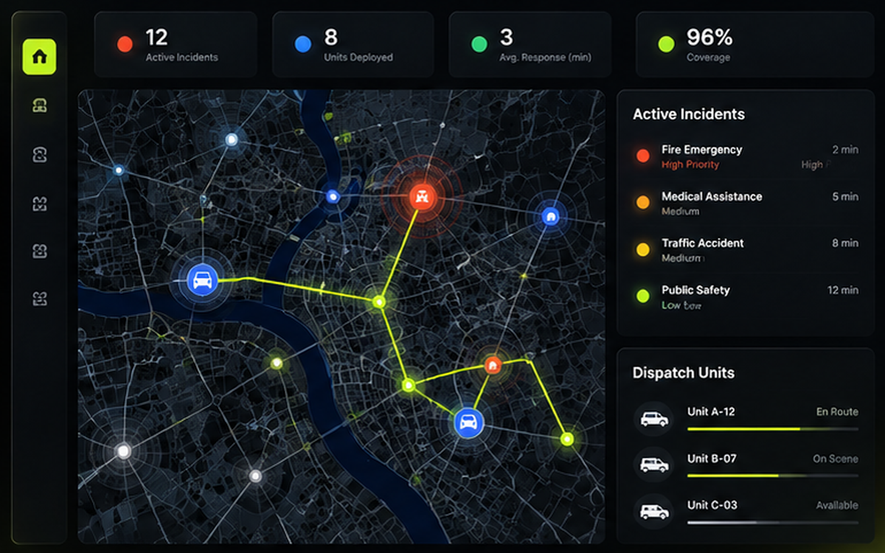
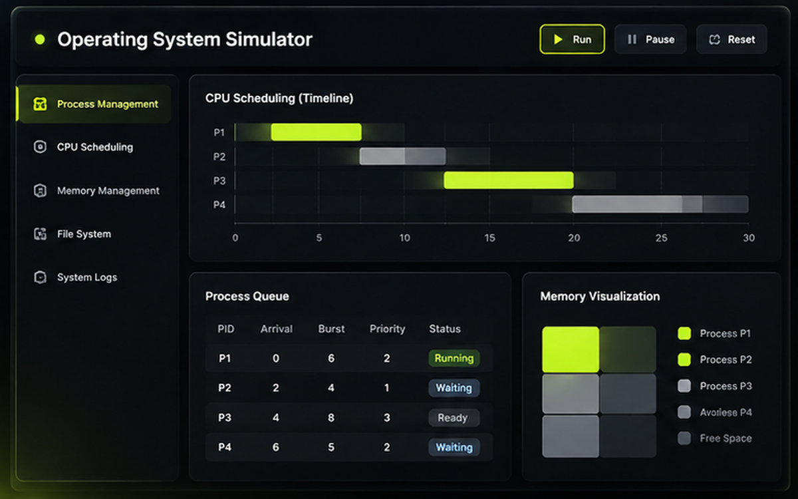
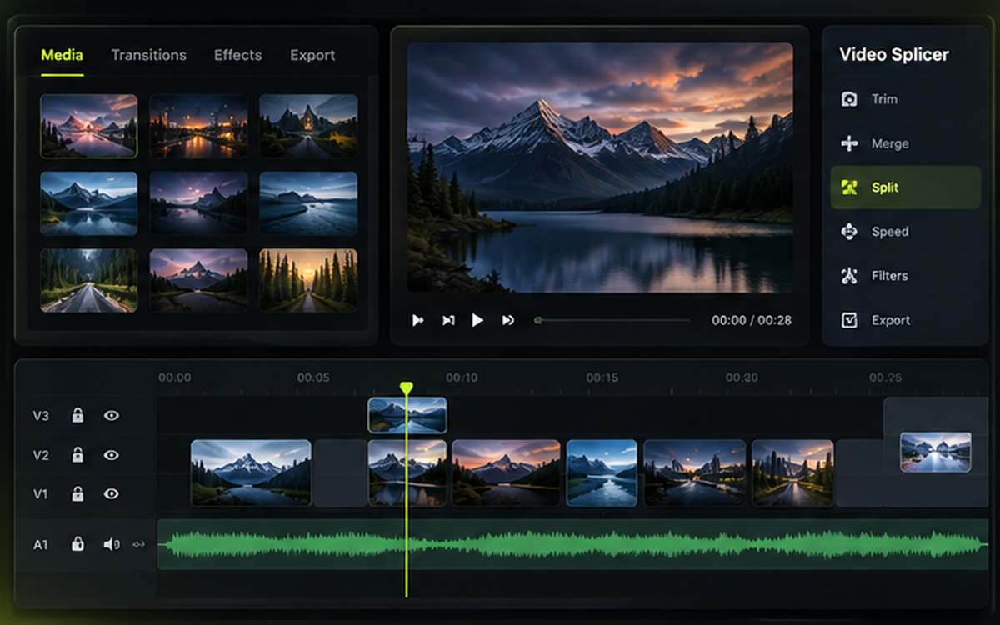
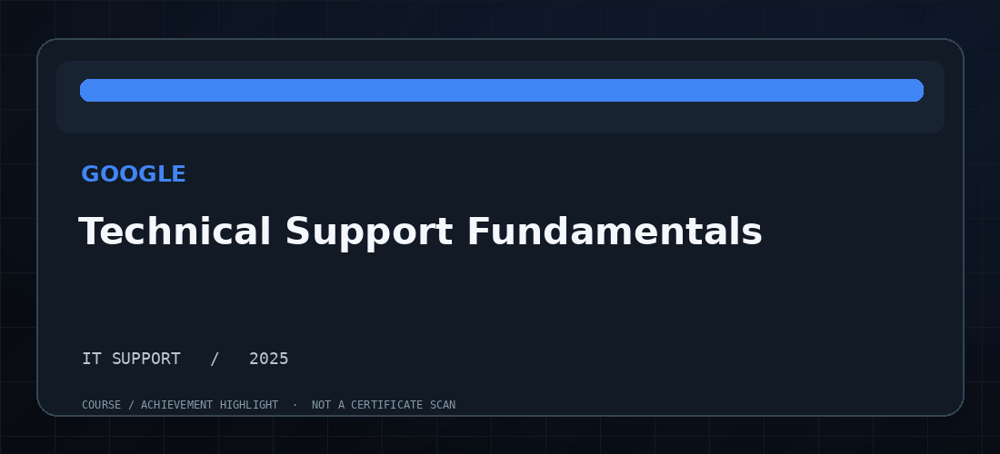
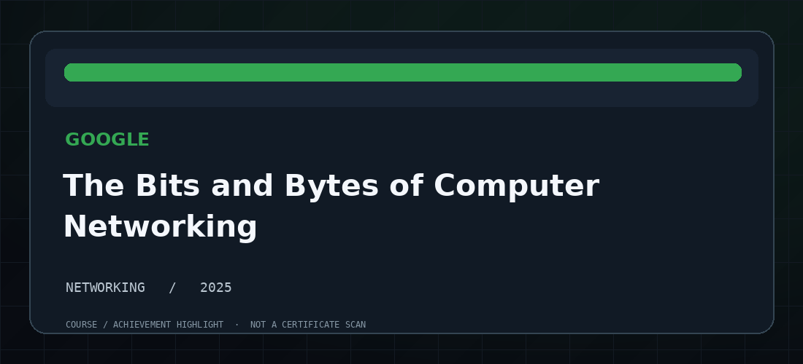
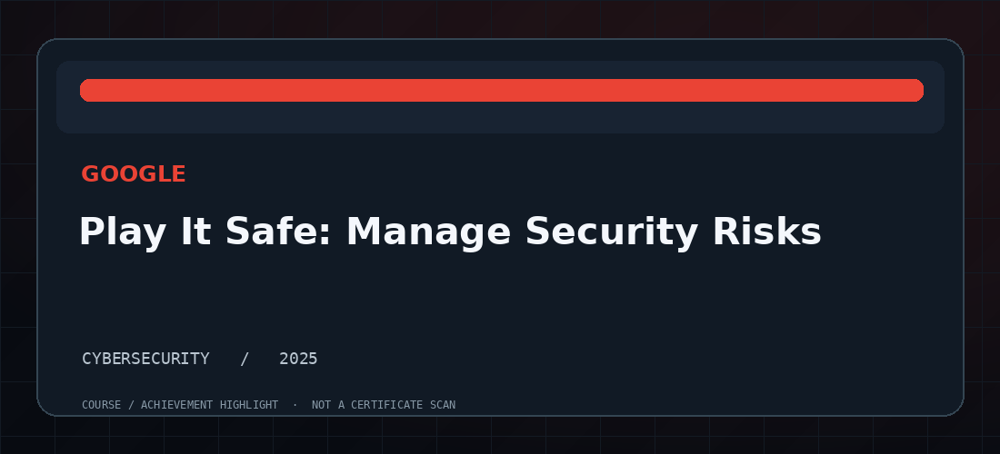

C++ / DSA

Nexus Grid — Emergency Response System
C++ city emergency-response simulation featuring graphs, Dijkstra routing, AVL/BST trees, heaps, hashing, dispatching and inventory management.
I’m pursuing a BS in Computer Science at the University of Central Punjab, Lahore. I work with C++, Python and web technologies, enjoy solving technical problems, and am exploring DevOps, DevSecOps, cloud engineering and automation.
An evolving foundation in programming, software design, web development and computer systems — with a growing interest in DevOps and infrastructure.
Building console applications and strengthening core programming skills through object-oriented design and problem solving.
Using Python for programming assignments, data handling, automation exercises and AI coursework.
Creating responsive pages and small business websites, including the deployed Zentorix website.
Applying graphs, trees, heaps, queues, hashing and shortest-path algorithms to practical C++ projects.
Learning operating systems, networking concepts and command-line tools through coursework and practical labs.
Currently exploring DevOps, DevSecOps, cloud engineering and automation as future professional directions.

C++ city emergency-response simulation featuring graphs, Dijkstra routing, AVL/BST trees, heaps, hashing, dispatching and inventory management.

C++ OOP simulator covering FCFS/priority scheduling, memory, devices and file-system management.

A video-splicing utility project focused on working with and combining video clips. Project demo available on request.
Programming languages, core computer science topics and development tools I use or study.
Experience in entrepreneurship, customer support and student society activities.
Founded Zentorix and developed its responsive business website, applying web-development skills and taking responsibility for the project from implementation to deployment.
Worked as a Customer Support Representative at Mindbridge in Lahore (May–July 2024), handling customer queries and documenting interactions in CRM systems.
Contributed to student activities as part of the UCP Rotaract Club media team, supporting communication and club initiatives.
Certificates and competition recognition from Google, the University of Michigan, Cisco, Simplilearn and HEC-linked learning programs.

Issued Mar 2025 · Credential ID W7M1YBNF3M9P
Verify Certificate ↗
Issued Jun 2025 · Credential ID FJ3U0NZWMS2L
Verify Certificate ↗
Issued May 2025 · Credential ID 4DS4USRGQGA3
Verify Certificate ↗